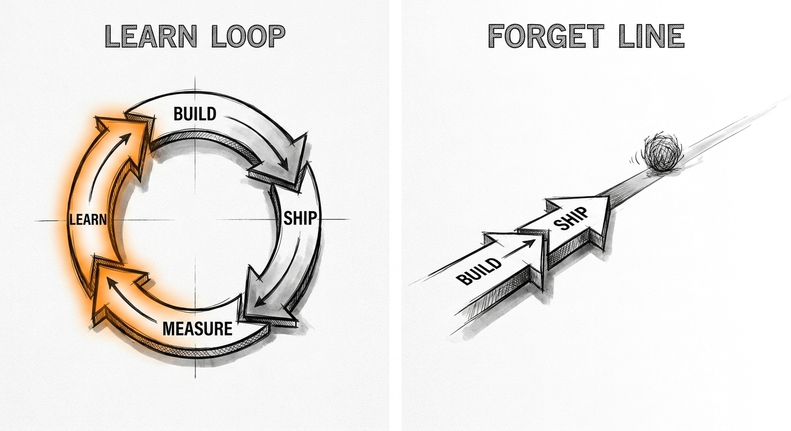
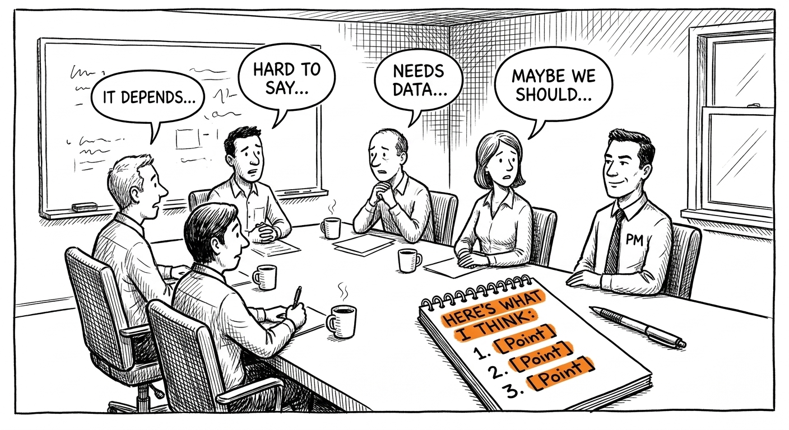
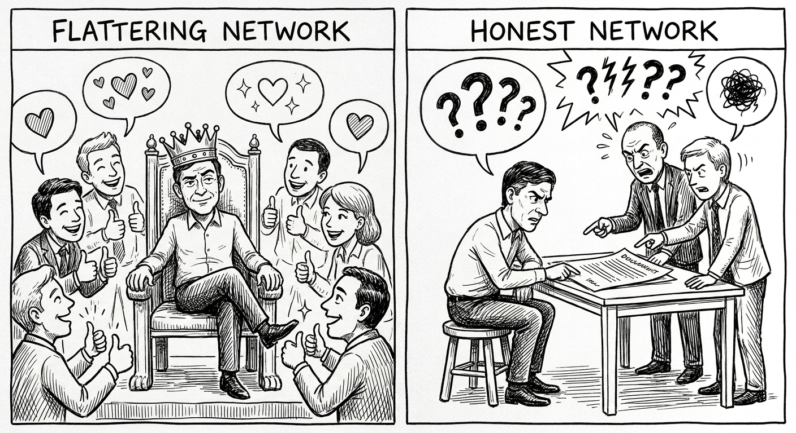
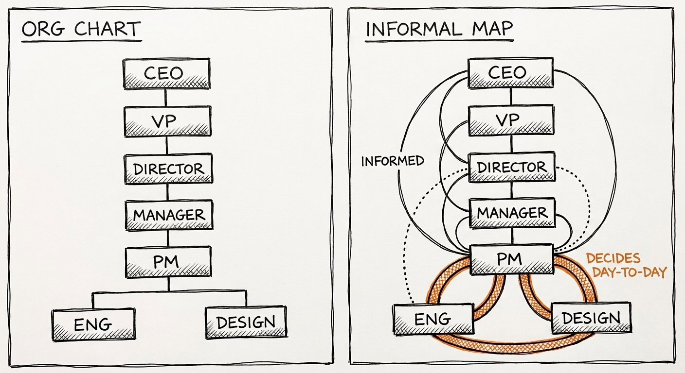
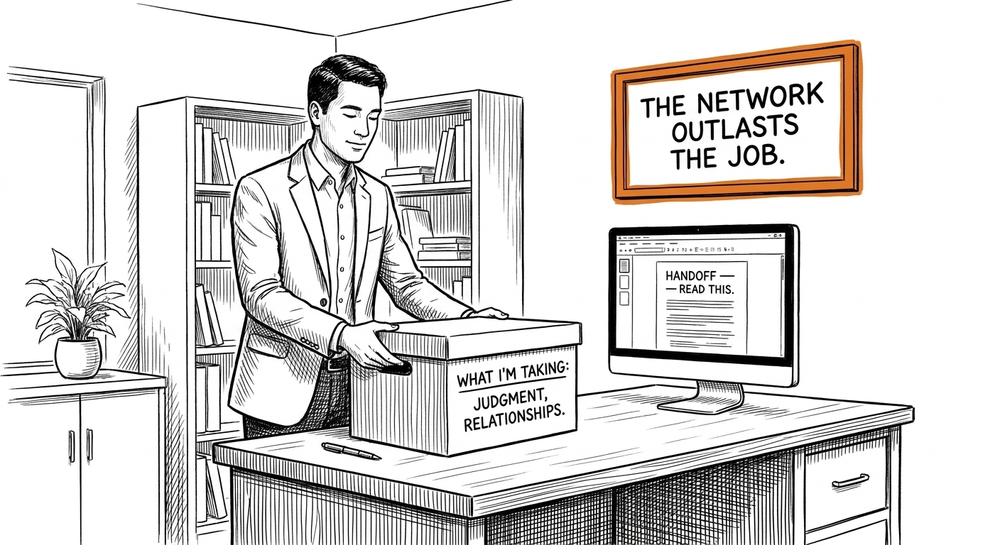

Capítulo 8. Qué sigue
Hiciste los ejercicios. Elegiste una dirección.
Este capítulo no es una celebración. No te felicita por una decisión que apenas empieza. Te da dos cosas: cómo mantenerte en el trabajo si lo elegiste, y cómo dejarlo bien si no.
Ambas importan. El PM que se quema a los dos años porque no supo proteger lo que había construido es un desperdicio. La persona que decidió que PM no era lo suyo y pasó tres años más persiguiéndolo de todos modos también.
Hay un tercer grupo para el que también es este capítulo: la gente que está por empezar su primer rol de PM y no quiere ser la persona que todos temen en el mes dos. Esa sección también está aquí. Se llama los primeros noventa días, y es la sección que la mayoría de los libros de PM se salta, porque es incómodo admitir cuánta gente consigue el trabajo y de inmediato lo empeora.
Cada uno de esos problemas tiene un patrón. El patrón se reconoce por adelantado, lo que significa que es evitable — si sabes qué buscar.
8.1 Si estás adentro: cómo no ser despedido
Decidiste que el trabajo es para ti. Los ejercicios cayeron bien. Ahora tienes dieciocho meses — más o menos — antes de que el trabajo cambie lo suficiente como para que lo que te metió no baste para mantenerte.
Así se usan.
8.1.1 Lanza cada trimestre
Tu título no importa. Tu LinkedIn no importa. Tus documentos no importan. Lo que se lanzó — a usuarios, no al deck de tu manager — importa.
Pero seamos específicos sobre qué significa «lanzar» en 2026, porque la definición cambió.
La IA puede generar una funcionalidad funcional en una tarde. Un sprint que producía un prototipo funcionando solía ser un hito significativo. Ya no lo es. La barra se movió de «lanzado» a «lanzado y aprendido». La pregunta no es «¿algo salió a producción?». Es «¿algo salió a producción, qué cambió en el comportamiento de los usuarios por eso, y qué hiciste con esa información?».
La nueva definición de lanzar:
Un lanzamiento está completo cuando tres cosas son ciertas: la cosa está frente a usuarios reales, tienes una medición de qué cambió gracias a ella, y tomaste al menos una decisión basada en lo que mediste. Si lanzaste algo en marzo y para abril no has mirado los datos, lanzaste pero no cerraste el bucle. Cerrar el bucle es el trabajo. La construcción es solo el permiso para empezar el trabajo de verdad.
La mayoría de los consejos de PM optimizan para la construcción. En 2026, la restricción no es construir — es decidir qué te enseñó la construcción, y tener la disciplina de actuar en consecuencia.

Esto importa porque la IA comprimió los ciclos de construcción tan dramáticamente que muchos equipos ahora están inundados de funcionalidades lanzadas sin aprendizaje. El PM que lanza doce cosas en un trimestre y no aprende de ninguna vale menos que el PM que lanza cuatro y cambia de dirección dos veces por lo que encontró. No confundas velocidad con progreso.
Por tipo de empresa:
Startup: Si no has lanzado en noventa días, eres peso muerto. La IA hace de noventa días una eternidad. Tu meta son treinta. Lanza en treinta, aprende en treinta, mata en treinta si está mal. La empresa no te debe un trimestre completo para encontrar el paso. Lo que puedes hacer para preservar tu posición mientras te pones al día: encuentra algo chico que Ingeniería quería hacer pero no podía priorizar, y despeja el camino para que salga. No tiene que ser tu idea. Tiene que estar hecho.
Scale-up: Si no has lanzado en un trimestre, tu equipo va camino a un reorg. Te vas a enterar por una invitación de calendario sin contexto. La única protección contra el reorg es el impacto reciente y visible — usuarios que cambiaron su comportamiento por algo que lanzaste. «Estamos diseñando esto» no es protección. «Lanzamos esto y la retención mejoró en esta cohorte» sí. Mantén un resumen corrido de un párrafo con qué se lanzó, qué se movió y qué estás observando. Compártelo sin que te lo pidan cada dos semanas.
Megacorporación: Si no has lanzado en dos trimestres, tu alcance se está encogiendo. No lo vas a ver directamente. Tu manager te dará un poco menos de contexto en el sync semanal. Invitarán a alguien más a la reunión que solías encabezar. Tu nombre aparecerá segundo en el documento en vez de primero. Lanza antes de que llegue a ese punto. En una megacorporación, lanzar también es político — necesitas hacer visible el impacto, no solo real. Escribe el memo interno. Mándaselo a tu manager y a tu skip. Sé específico sobre qué se movió y qué hiciste para moverlo. Los PMs de megacorporación que hacen gran trabajo invisiblemente son los primeros en perder alcance.
Prueba: Abre tu calendario de hace seis meses. ¿Qué cambió en el producto gracias a una reunión en la que estuviste? Si la respuesta es «nada que pueda rastrear directamente», arréglalo este trimestre.
8.1.2 Ten una postura
La IA genera consenso. El consenso es seguro y llega tarde. Tu trabajo es tener una postura antes que el modelo, antes que el equipo, antes de que los datos la respalden del todo — y sostenerla con la claridad suficiente para que el equipo pueda apuntarle a algo y no a una distribución de posibilidades.

A veces vas a estar equivocado. Está bien. Los PMs que nunca se equivocan son los que solo toman decisiones obvias, y las decisiones obvias no necesitan un PM.
Qué tipo de posturas importan:
No todas las posturas son iguales. La postura que importa en el trabajo de producto no es una preferencia («creo que la navegación debería ser más simple») — es una hipótesis causal («creo que la complejidad de la navegación hace que los usuarios se pierdan la acción central, y por eso la activación está baja en esta cohorte a pesar de la alta adquisición»). La diferencia es que una hipótesis causal se puede probar. Una preferencia solo se puede discutir.
Las posturas que se ganan respeto comparten tres propiedades. Son específicas — no «los usuarios están confundidos» sino «los usuarios que llegan a la página de configuración por primera vez se van sin completar una acción primaria el 73% de las veces». Son falsables — puedes nombrar qué evidencia te haría cambiar de opinión. Y se sostienen con la confianza apropiada — no reclamas una certeza que no tienes, pero tampoco lo suavizas todo hasta el sinsentido.
Qué te gana la etiqueta de «difícil» vs. qué hace que te tomen en serio:
El PM al que etiquetan de difícil suele ser el que tiene una postura y la sostiene sin importar la información nueva. Confundió tener una postura con ser inamovible. Cuando los datos vuelven en contra de su hipótesis, reinterpreta los datos. Cuando el ingeniero dice que el supuesto era técnicamente incorrecto, discute la interpretación. No está sosteniendo una posición — está protegiendo su identidad.
El PM al que toman en serio sostiene su postura con claridad — «mi creencia actual es X por Y» — y la actualiza explícitamente cuando llega la evidencia. «Estaba equivocado sobre el supuesto de activación. La nueva hipótesis es Z». La actualización no es una falla. Es lo que hace creíble la siguiente postura. Si nunca te actualizas, nadie confía en tus posturas, porque saben que no están conectadas a la evidencia.
El movimiento específico que construye credibilidad: cuando te equivoques, dilo en la misma sala y con la misma especificidad que usaste cuando estabas confiado. No «aprendimos algunas cosas» — «me equivoqué en el supuesto de retención. Esto es lo que pensaba, esto es lo que mostraron los datos, esto es lo que haría distinto». Esa es la postura que le gana al equipo la confianza para la siguiente decisión.
Por tipo de empresa:
Startup: Si tú no tienes una postura, el founder sí. Acabas de convertirte en project management. En una startup, tener una postura significa estar dispuesto a rebatir la postura del founder, con evidencia, en una sala donde el founder está presente. Es incómodo. También es el trabajo. Si no puedes, eres una función de ejecución, no un PM.
Scale-up: Si tú no tienes una postura, el lead de ingeniería sí. Mismo resultado — eres sobrecarga de coordinación, no juicio. En una scale-up, tener una postura significa hacer una recomendación de roadmap por escrito, con tu nombre encima, antes de que el grupo alcance el consenso. No después.
Megacorporación: Si tú no tienes una postura, otros tres PMs sí. Vas a perder el alcance una invitación de calendario a la vez. En una megacorporación, tener una postura significa publicar el documento de estrategia antes de que otro lo haga. Quien mueve primero el encuadre tiene una influencia desproporcionada sobre el resultado.
Prueba: Enuncia por qué existe tu producto en una frase. Sin jerga. Sin «plataforma». Sin «AI-native». Sin «ecosistema». Si no puedes, no tienes una postura. Tienes puntos de conversación.
8.1.3 Mantén honesta tu red
Los PMs que sobreviven conocen a otros PMs. No por vacantes. Por calibración.
«¿Estoy loco, o este roadmap está mal?». El modelo te va a decir que tienes razón. Tu manager te va a decir que tienes razón porque está ocupado. Tu equipo te va a decir que tienes razón porque disentir sale caro. Otro PM que lanzó algo parecido el año pasado y no tiene nada en juego en tu respuesta te va a decir la verdad.
Quién debería estar en tu red de PMs:
De tres a cinco personas, no cincuenta. La red que te calibra es chica y específica. Quieres:
Una persona uno o dos niveles adelante de ti en una empresa de etapa parecida. Ve lo que estás por toparte. Cometió el error que estás por cometer. Puede decirte qué haría distinto antes de que lo hagas mal.
Una persona en un tipo de empresa muy distinto. Si estás en una megacorporación, alguien de startup. Si estás en una startup, alguien de scale-up. El contexto distinto rompe el supuesto de que tu manera es la única. También revela cuáles de tus prácticas son genuinamente buenas y cuáles son solo lo que hace tu empresa.
Una persona que dejó PM e hizo otra cosa. Puede decirte lo que no se ve desde adentro — cómo se transfieren las habilidades, qué extraña, qué no. Esta es la perspectiva más honesta disponible. Quienes se fueron suelen conocer el trabajo mejor que quienes siguen en él, porque ya no lo están defendiendo.
Una persona que te diga cuando estés mal. No un amigo que da feedback tibio. Un par con la autoridad para rebatirte y el hábito de hacerlo. Es la persona más rara de cualquier red y la más valiosa.

Qué te dice una red honesta vs. una aduladora:
Una red aduladora te dice: tu roadmap se ve bien, tus instintos son sólidos, la frustración que sientes es parte del trabajo. Una red honesta te dice: tu roadmap tiene un hueco en este lugar específico, tu instinto sobre el problema de activación probablemente es correcto pero tu enfoque de medición está mal, y la frustración que sientes es síntoma de un problema organizacional más grande que vale la pena atender directamente.
Lo adulador es cómodo. Lo honesto es útil. Construye la honesta, aunque sea más chica.
Cómo mantenerla:
No esperes a necesitarla. La red que solo existe cuando estás desesperado es aquella en la que todos están ocupados cuando llamas. La red que ayuda es la que has estado alimentando — compartiendo lo que aprendiste, preguntando cuando no necesitas la respuesta con urgencia, devolviendo las llamadas cuando no se tratan de ti.
Hábito específico: una vez al mes, mándale a un PM que respetes algo que te pareció interesante sobre su producto o su espacio. Sin pedido. Sin agenda. Solo «estaba pensando en tu problema de retención cuando vi esto». Así se construye la relación que existe antes de que la necesites.
Cómo: Mándale a un PM que respetes tu teardown actual — qué estás construyendo, por qué, qué métricas miras. Pídele su lectura. No «feedback». Su lectura. Si rebate, engánchate con el rebate. La conversación es el valor.
La red que te calibra es la que se sintió un poco incómoda de construir — porque exige mostrarle a la gente dónde estás, no dónde quieres que crean que estás.
8.1.4 Aprende el nuevo tedio
La IA mató el viejo tedio: escribir specs, formatear documentos, sacar reportes estándar. Bien.
Un nuevo tedio lo reemplazó. Esto no es una queja — es una descripción de a dónde se movió el trabajo poco glamoroso pero esencial. Si no sabes cuál es el nuevo tedio y no has hecho nada de él, ya vas detrás de los PMs que sí.
Qué es realmente el nuevo tedio en 2026:
Diseño de evals. Un «eval» es un conjunto estructurado de casos de prueba para medir si un sistema de IA se comporta correctamente. Cuando tu producto usa un LLM, alguien tiene que definir qué significa «correcto» — qué debería decir el modelo, qué no debería decir, qué cuenta como falla. Ese alguien es el PM. No porque los PMs escriban evals en código (aunque algunos lo hacen), sino porque los evals requieren juicio de producto sobre cómo se ve el buen comportamiento. «El modelo no debería inventar citas» no es un eval. «En estos 200 prompts de prueba sobre temas de investigación, las citas del modelo deben coincidir con el material fuente de la base de recuperación» es un eval. Escribir la segunda versión de esa frase es trabajo de PM, y la mayoría de los PMs todavía no lo está haciendo.
Depuración de prompts. Cuando la funcionalidad de IA falla, alguien tiene que averiguar por qué. Eso exige poder mirar un prompt, una ventana de contexto y un output, y formar una hipótesis de dónde vino la falla. No exige ser ingeniero de ML. Exige entender que el comportamiento del modelo es función de las instrucciones que recibe, del contexto que tiene y del entrenamiento con el que se construyó — y poder aislar cuál de esas es la fuente más probable del problema. «El modelo alucinó» no es un diagnóstico. «Al modelo le dieron contexto del usuario que contradecía el system prompt y se fue con el contexto del usuario, y por eso el output salió mal» es un diagnóstico.
Especificación de comportamiento. Conforme los sistemas de IA se vuelven más capaces, especificar qué deben hacer se vuelve más complejo y más importante. Una spec tradicional dice «cuando el usuario haga clic en X, haz Y». Una spec de comportamiento para una funcionalidad de IA dice «cuando la intención del usuario esté en la categoría A, prefiere el enfoque de respuesta B; cuando el contexto incluya las señales C o D, ajusta el comportamiento en las formas E y F; nunca hagas G sin importar lo que pida el usuario». Escribir eso con claridad, de forma completa y en una forma que los ingenieros puedan implementar y probar — esa es la nueva spec. La mayoría de los PMs está escribiendo la spec vieja para productos nuevos, y después se pregunta por qué el comportamiento de la IA está mal.
Diseño de medición para sistemas probabilísticos. Las métricas de producto tradicionales son deterministas: ¿se renderizó el botón, hizo clic el usuario, ocurrió la conversión? Las métricas de producto de IA son probabilísticas: ¿el output del modelo es «bueno» — y qué significa bueno, y cómo lo mides a escala, y cómo sabes cuándo ocurrió una regresión? Diseñar el sistema de medición de un producto de IA es tedioso, exige cuidado y todavía no tiene un playbook estándar. El PM que lo resuelve para su producto crea una ventaja duradera.
Revisar outputs del modelo en busca de errores confiados. Este es el trabajo diario del que nadie habla. Los modelos de IA fallan de maneras que se ven bien. Un modelo que da una respuesta confiadamente equivocada es más peligroso que uno que dice «no sé». Alguien tiene que mirar una muestra de outputs con regularidad, marcar los confiadamente equivocados y devolver eso al conjunto de evals y a la spec de comportamiento. Ese alguien es el PM, en colaboración con ingeniería. Es tedioso. Es importante. Es la diferencia entre un producto que mejora con el tiempo y uno que se degrada en silencio.
No necesitas convertirte en ingeniero de ML. Necesitas saber lo suficiente para correr el post-mortem cuando tu funcionalidad de IA falle sin decir «el modelo se equivocó» y sentarte. «El modelo se equivocó» es el inicio de la investigación, no el final.
Prueba: ¿Puedes explicar por qué falló tu última funcionalidad con IA — sin usar la palabra «modelo» como el agente? Si la respuesta es «el modelo alucinó», te falta otra frase. ¿Qué alucinó? ¿Por qué? ¿Qué en el prompt o en el contexto contribuyó? ¿Qué instrumentarías distinto la próxima vez?
8.2 Los primeros 90 días como PM nuevo
Conseguiste la oferta. Empiezas en dos semanas. Esto es lo que la mayoría hace mal y qué hacer en su lugar.
El error más común de los PMs nuevos es llegar con opiniones antes de tener legitimidad. Tienes una perspectiva basada en el proceso de entrevistas, en lo que la empresa dijo públicamente, en el producto que usaste como consumidor. Esa perspectiva es casi con seguridad incompleta de maneras que todavía no puedes conocer, y actuar sobre ella en la semana dos es como te conviertes en el PM al que todos le sacan la vuelta en lugar de trabajar con él.
Días 1–30: entiende antes de proponer
Tu trabajo en los primeros treinta días no es lanzar nada. No es proponer nada en una sala llena de gente. Es entender cómo este equipo específico toma decisiones — no cómo las toman los equipos de PM en general, sino cómo lo hace este, con esta gente, en esta cultura, bajo estas restricciones.
En específico:
Aprende quién decide las cosas de verdad. No quién dice el organigrama que decide. Son cosas distintas. En la mayoría de las organizaciones, la autoridad formal de decisión y la autoridad real están desalineadas en al menos dos lugares. Encuéntralo antes de enrutar una decisión por el camino formal cuando el camino real es otro. La brecha es más ancha después de las adquisiciones, y se cierra más rápido en la dirección equivocada. Yo lo observé de cerca en dos transiciones en las que no estuve adentro: Social Bicycles hacia Uber, y Udacity hacia Accenture. En ambos casos, la gente que tenía el mapa informal — que sabía cómo se tomaban realmente las decisiones, qué relaciones importaban operativamente, cuáles eran las verdaderas restricciones del producto — no sobrevivió la integración. En Uber, ninguno de los cuatro fundadores de Social Bicycles duró; pocos de los que pasaron con la adquisición seguían ahí cuando Uber le vendió el brazo de bicicletas compartidas a Lime. En Udacity, pocos del equipo temprano se quedaron durante la asimilación de Accenture. Los PMs que heredaron esos productos después tenían organigramas y a nadie que los supiera leer. Encuentra el mapa informal temprano. Tiene una vida media más corta que el organigrama.

Aprende qué ya se intentó y falló. Pregunta directo: «¿Qué es algo que intentamos y no funcionó en el último año?». Vas a aprender más de la lista de fracasos que del roadmap. La lista de fracasos te dice qué supuestos sostiene el equipo, qué restricciones políticas existen, qué deuda técnica moldea las opciones. El roadmap te dice qué aprobó la gerencia.
Escribe tres teardowns privados del producto. No para compartir. Para calibrarte. Qué está roto, para quién, y qué medirías. A los treinta días, mira lo que escribiste y verifica cuáles de tus diagnósticos iniciales se sostienen y cuáles fueron corregidos por lo que aprendiste. Ese delta es tu puntaje de calibración. Cuanto más bajo, más humilde deberías ser al proponer cambios.
Mata algo chico. Un dashboard muerto que nadie lee. Una reunión recurrente sin decisiones asociadas. Una funcionalidad zombi que aparece en la navegación pero tiene cero usuarios. Proponer matar algo chico te enseña más sobre la tolerancia al cambio del equipo que cualquier documento de onboarding. Hazlo con un escrito breve explicando por qué. Observa qué pasa. Si pasa fácil, el equipo está cómodo con el cambio. Si dispara una respuesta política desproporcionada al tamaño de la cosa, acabas de aprender algo importante sobre dónde están enterrados los muertos.
Días 31–60: gánate el derecho a proponer
Pasaste un mes aprendiendo. Ahora te ganas la legitimidad para tener opiniones demostrando que tus opiniones están ancladas en la realidad que estuviste estudiando, no en los supuestos con los que llegaste.
Lanza algo chico que no haya sido tu idea. Encuentra algo que Ingeniería quería hacer pero no podía priorizar porque ningún PM había despejado el camino. Encuentra algo que Diseño ya había mockeado y nadie calendarizó. Hazte cargo de la ejecución para sacarlo. No lo haces para robar crédito — lo haces para demostrar que puedes lograr que las cosas pasen, que es el prerrequisito para que alguien te confíe marcar la dirección.
Comparte uno de tus teardowns. No los tres. Elige aquel en el que tengas más confianza y menos probabilidad de pisar territorio político ajeno. Compártelo con la persona mejor posicionada para engancharse con honestidad — probablemente el lead de ingeniería o un diseñador senior, todavía no tu manager. Pide su lectura. Escucha con cuidado qué rebate. Ese rebate te dice dónde tu modelo del producto sigue estando mal.
Empieza a medir algo que nadie está midiendo. Encuentra un hueco en la instrumentación — un flujo de usuario sin tracking, un comportamiento que importa pero no tiene métrica. Instruméntalo. No porque vayas a saber de inmediato qué hacer con los datos, sino porque demostrar iniciativa de medición es una señal de que piensas en resultados, no en funcionalidades.
Días 61–90: ten una posición
Con un documento. Con datos. En una sala llena de gente que esperaba otra cosa.
Para el día noventa, necesitas haberle dicho que no a algo, haber recomendado matar algo o haber propuesto un cambio significativo a cómo trabaja el equipo — y haberlo hecho por escrito, en una reunión, con tu razonamiento visible. No en un uno-a-uno con tu manager. En una sala donde el rebate pueda ocurrir en tiempo real y tengas que defender tu razonamiento.
Si no puedes hacerlo para el día noventa, todavía no eres PM. Eres un tomador de notas bien organizado. No es un insulto — es un diagnóstico. Pide el alcance que te exija tener una posición, aunque eso signifique pedir menos alcance temporalmente para hacer una sola cosa con convicción.
El modo de falla a evitar: El PM nuevo que pasa los primeros noventa días construyendo relaciones, alineando stakeholders y preparándose para eventualmente tener una opinión. A esa persona la quieren. No es útil. Las relaciones sin producto no se componen. El producto sin relaciones no se sostiene. Necesitas ambos, y la manera de conseguir ambos es hacer el trabajo en público temprano, aunque sea imperfecto.
Regla: Si no estás incómodo para el día noventa, algo está mal con el alcance. O pide más, o pide distinto. Pero pide.
8.3 Si estás afuera: cómo salir limpiamente

Hiciste los ejercicios. Sentiste mayormente pavor. Leíste el capítulo 7 y encontraste el rol adyacente que encaja mejor. Bien.
Así se sale sin tres años desperdiciados de por medio.
8.3.1 No lo llames fracaso
PM no es un trabajo mejor. Es una configuración específica del trabajo: conflicto, ambigüedad, narrativa, responsabilidad por resultados que no controlas del todo.
Si esa configuración no te queda, no eres menos ambicioso. Estás calibrado. Los que hacen bien el trabajo son quienes, por la combinación que sea de disposición y trayectoria, encuentran esa configuración energizante más veces que drenante. Tú descubriste que la tuya es lo contrario. Eso es información sobre el encaje con el trabajo. No es información sobre tu capacidad de hacer cosas difíciles.
El costo social de decidir contra PM es más bajo de lo que ha sido en años. En 2021, el título de PM tenía un estatus casi mitológico en las conversaciones de carrera en tech. Eso se corrigió. Hay carreras excelentes en liderazgo de ingeniería, design systems, operaciones de growth, ciencia de datos y estrategia de contenido que pagan igual de bien, exigen la misma inteligencia y cargan el mismo impacto. La persona que es muy buena en una de esas cosas le aporta más al mundo que un PM mediocre que quería el título.
8.3.2 Usa lo que aprendiste
Los ejercicios que hiciste no son específicos de PM. La tolerancia al triage que probaste en la bandeja, el sostener posiciones que probaste en el no, la comodidad con la incertidumbre en la decisión — aparecen en todo rol profesional, en proporciones distintas.
Habilidades de PM que se transfieren ampliamente:
Encuadre de problemas. El hábito de preguntar «cuál es realmente el problema aquí, en vez de la solución que alguien propuso» es valioso en toda función. Los ingenieros que lo tienen producen menos soluciones perfectas al problema equivocado. Los diseñadores que lo tienen no confunden consistencia visual con claridad para el usuario. La gente de marketing que lo tiene escribe textos que atienden una objeción real en lugar de amplificar una afirmación.
Comunicación con stakeholders. Saber comunicar la misma información de forma distinta a un ingeniero, una diseñadora, un líder de ventas y un CEO — esa es una habilidad de gestión general, no exclusiva de PM. Si la desarrollaste haciendo trabajo de PM, se va contigo.
Orientación a resultados. El hábito de preguntar «qué cambió gracias a este trabajo» en vez de «qué producimos» es raro y valioso en todas partes. La mayoría de los entornos profesionales todavía optimiza para outputs. La persona que por instinto busca los resultados va adelante del default.
Comodidad con la ambigüedad. Si desarrollaste alguna tolerancia a actuar con información incompleta, tienes algo que la formación formal rara vez produce. No todos los que intentaron PM la desarrollaron — algunos encontraron la ambigüedad genuinamente intolerable, que es la señal correcta de tener. Pero si notaste que te ibas acomodando a ella, esa comodidad es duradera.
Habilidades de PM que se atrofian al salir:
La autoridad de roadmap. La capacidad de decir «eso no lo vamos a construir» y que se sostenga es específica del rol de PM. En la mayoría de los roles adyacentes vas a tener que influir sobre el alcance en lugar de decidirlo. Si tuviste autoridad de roadmap, su ausencia puede frustrarte al principio. Es normal. Se ajusta.
La mediación cross-funcional. La práctica específica de sentarte en la sala donde ingeniería, diseño y negocio están en conflicto y ser quien lo resuelve — eso carga menos peso en roles donde estás en una función y no entre funciones. Lo harás menos. Puede que ese sea justamente el punto.
Si construiste algo — un prototipo, un teardown, una herramienta — consérvalo. Demuestra lo que la mayoría de los roles adyacentes realmente quiere: alguien que hace algo cuando ve un hueco, en vez de esperar a que otro defina la spec.
8.3.3 No lo sigas persiguiendo
El MBA que hace práctica de PM tras práctica de PM esperando que en algún momento se sienta bien no está investigando. Está esperando que la persistencia le cambie la disposición.
No se la va a cambiar. La disposición cambia despacio y a través de experiencias que no son «intenta lo mismo otra vez». Si tres intentos reales de trabajo tipo PM produjeron la misma sensación, la muestra es suficiente.
Ve a hacer la cosa adyacente que te jaló en el capítulo 7. Hazla con la misma seriedad que le habrías puesto a PM. El dominio no importa tanto como el encaje.
El paso práctico: escribe la cosa específica del trabajo de PM que consistentemente te produjo pavor en los ejercicios. Luego mapéala a lo que realmente quieres. «Odié el ejercicio del no — no me gusta sostener posiciones bajo presión» mapea a roles donde sostener posiciones se exige menos: BizOps, product operations, estrategia de contenido, ingeniería. «Odié el de la sala — no me gusta el conflicto nombrado» mapea a roles donde el conflicto queda más a distancia: investigación, ciencia de datos, design systems. «Odié el de la bandeja — no me gusta el trabajo reactivo y multi-prioridad» mapea a roles con alcance más definido: ingeniería especializada, investigación, escritura.
La meta no es evitar todas las cosas difíciles. Es encontrar las cosas difíciles que para ti valen la pena.
Ese mapeo vale la pena conservarlo. El patrón de lo que te drenó en PM es exactamente lo que te dice dónde buscar después.
8.4 Para ambos
Estés adentro o afuera, una cosa es cierta: el trabajo va a seguir cambiando.
Dentro de dieciocho meses, las herramientas serán distintas. Las preguntas de entrevista serán distintas. Parte de lo que este libro describió como «el impacto de la IA» estará tan incorporado a la práctica estándar que no hará falta nombrarlo. Otra cosa será lo nuevo que todos estén descifrando.
El trabajo de fondo — decidir qué vale la pena construir, para quién, con qué recursos, y mantener unido al equipo a través de la incertidumbre — seguirá ahí. Estaba antes de la IA. Estará después de lo que venga. La forma de la ejecución cambió. El núcleo no.
La última pregunta no es sobre PM. Es sobre ti.
¿En qué tipo de problema quieres pasar tu tiempo?
No «qué quiero lograr». No «por qué quiero que me conozcan». Qué tipo de trabajo diario, qué tipo de fricción diaria, qué tipo de satisfacción diaria — vale el costo de presentarse.
Si los ejercicios del capítulo 6 te apuntaron hacia esa respuesta, úsala. Si te apuntaron lejos de PM y hacia otra cosa, esa dirección es igual de válida.
La meta no es convertirte en PM. La meta es encontrar el trabajo donde la experiencia diaria — las reuniones, las decisiones, los conflictos, los momentos de claridad — sea del tipo que quieres más.
Deja de leer. Empieza a buscar.